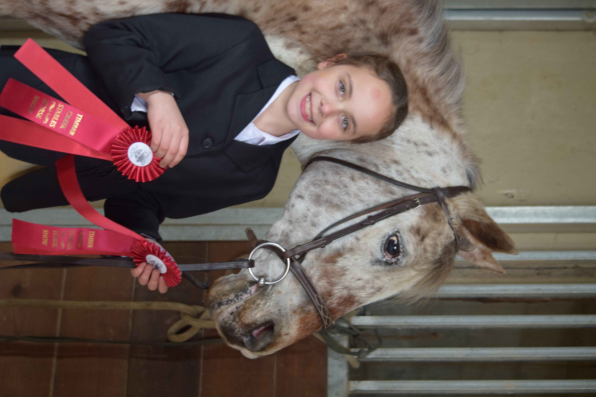

When I first started riding Bubbles, I had already been riding for 2 and a half years. I was coming straight from riding a 13 hh (about 4 1/2 feet) pony named Daisy.
She was a good starter pony, not fast, not slow. She listed well to all of my commands. I did small jumps with her, and competed in smaller shows.
She was a pony to help me learn about the fundementals of Horsebackriding. But it was time that I moved onto more of a challenge.
This is an image of me getting ready before my very first riding lesson, on an old mare named Mary
Daisy and I after my first show.
Bubbles was 18 years old when I first started riding him. He came from a long past, and not all known. We do know that he competed in Jumpers under the name of Clayton.
After that, a woman bought him to be ridden as a pleasure horse, and named him Shadow. Unfortunately, Bubbles was just too bouncy for that job and the lady looked to sell him.
After a few years, My current trainer went to check him out. As soon as she saw his loves for jumping she knew she had to get him.
He lived at her place for a few years before I started riding him, ocasionally having a lesson, but not really being ridden a lot.
In his past, he had been abused with the bit, so he locked his neck and sped up any time you tried to tell him to slow down. He needed someone to help him trust again.
The first few lessons were sort of a test to see if Bubbles was right for me, as well as an oppritunity for me to get to know Bubbles in all of the categories.
In the first few lessons, we tried, walk, trot, canter, backup, Small jumps, a little gallop, as well as a few other things.
You can probably imagine how strange the transition was, going from a good little pony to a bouncy speed demon.
But I loved how he tried his very best to be a good boy and do everything I asked, despite his instints telling him not to. I loved how he want to make me happy. And so our journey began.